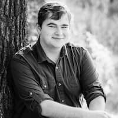

Benjamin Wasden | WDD 130
Hi! I'm Benjamin Wasden and I'm from California. I live around San Francisco and I absolutely love the bay area. There's many places to hike, explore, and visit and I've lived here my whole life. It doesn't rain a whole lot here but when it does, it pours. I like drawing and anything tech! I've worked as an I.T. Technician for several years but Software development has always interested me. I'm also a musician. Music was originally what I planend to get my degree in, but I changed my mind several years back. After trying out cybersecurity, I decided that software development would be a better fit for me. I.T. has been good for me as well, but I want to pursue a new avenue. For those reasons and more, I'm going to continue to try to finish my Bachelors.